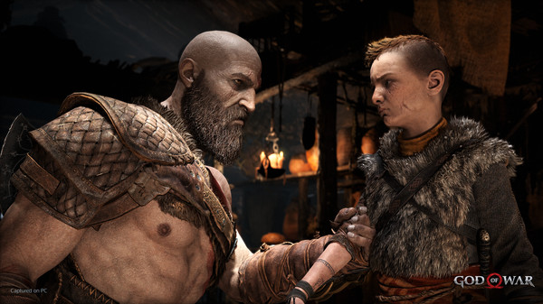
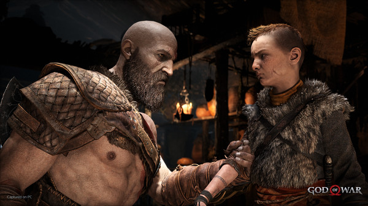

🪓 R1 e R2 são os ataques mais básicos — ataque leve e ataque pesado, respectivamente. Misture os dois de várias formas para criar combos devastadores.
🪓 Pressione Triângulo após arremessar o Machado Leviatã para trazê-lo de volta para a sua mão. Se ainda estiver segurando L2, o retÃculo guiará a trajetória de volta do machado, permitindo que ele atinja inimigos de surpresa.
Feedback do Site
Depoimentos
💬 “O curso mudou minha vida! Hoje trabalho na área de TI e nunca me senti tão realizado.†– Agostinho
💬 “Uma experiência única de aprendizado com suporte constante.†– Maumas


 
